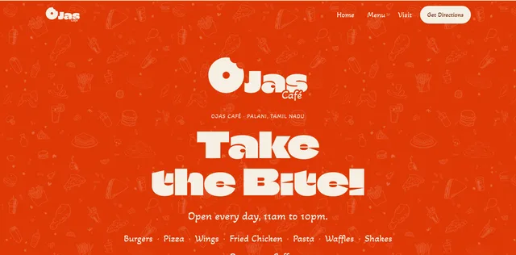

Café & Restaurant · Brand, systems, website & launch
Palani’s first air-conditioned café. I worked on this one end to end — positioning and brand, menu engineering, kitchen systems and SOPs, the website, the stack that runs the counter, and the launch itself.

A new café opening in Palani, a temple town in Tamil Nadu. Nothing existed yet — no positioning, no name treatment, no menu, no website, no systems, no idea how the kitchen would actually run on a busy evening. The opening date was fixed and all of it had to be ready before it.
This was never a website project. The website was one deliverable inside opening a business.
Everything started here, because every later decision depends on it. The position we settled on was accessible premium: the trending metro-café food people in Palani already see on Instagram but can’t get locally — loaded fries, wings, waffles, brownie shakes, kunafa — at tier-3 prices, in an air-conditioned room.
The audience is college students, young adults and families visiting the temple. That ruled out minimalist-luxury entirely: the brand had to read warm, loud and playful. Premium feel, not premium price.
It also set the voice. Every line of copy is written for a twenty-year-old — short, confident, punchy, never corporate.
The mark is a bitten donut — an O with a bite taken out of it. The bite reads as appetite and enjoyment; the closed circle reads as completeness and togetherness. It sits with the Ojas wordmark and a small “Café” descriptor.
The tagline is “Take the Bite!” — imperative, three words, and it works equally as a hero headline, a footer sign-off and a page title.
#DF3805 for headings, CTAs and the bite mark#733108 for item names and body text#F6EFE4 as the default surface, carried from the printed menuNeither typeface has a bold weight, so hierarchy is built from size, colour, case and letter-spacing rather than faux-bold — a constraint that kept the system disciplined across print and screen.
133 dishes is a lot of menu. Left unstructured it becomes a wall that customers skim and a kitchen that can’t execute, so the menu was built as a deliberate piece of design rather than a list of everything the kitchen can cook.
Categories were ordered around how people actually decide, and the signature items — the ones that are the whole reason to drive across town — were given the visual weight instead of being buried among the staples. Pricing was set to hold the accessible-premium line: recognisably tier-3 prices, without quietly giving away margin on the high-cost plates.
The same thinking shaped the digital menu. The home page shows a curated preview, never the full list — dropping 130 rows on someone who arrived from an Instagram story is how you lose them. The full menu lives on its own page, grouped and scannable on a phone.
A menu only works if the kitchen can repeat it. The systems work covered how the space runs once there are people in it:
None of this is glamorous and all of it decides whether the brand survives contact with a Saturday night. Consistency is the product.
Four pages — home, menu, gallery and visit — hand-coded in plain HTML, CSS and JavaScript with no build step, deployed as static files. Most visitors arrive from the Instagram bio link on a phone, often on 4G, so it was designed at 390px first and kept deliberately light.
A settings block at the top of one script holds the phone number, WhatsApp link, Google Maps link, address, hours and the opening offer. Fill those in once and every Call button, every Directions link, the footer and the Open now badge update across all four pages together. The 133-item menu lives in a single plain file, so changing a price means editing one line.
A café doesn’t open because the website is finished. The counter has to work on day one, so I helped choose and set up the stack behind it:
Reelo matters more than it looks. A café in a town this size lives on repeat custom, and a loyalty programme wired into WhatsApp reaches people where they already are — instead of paying to re-reach customers who have already walked in once.
In a town this size, most customers find you on a map or a feed long before they find a website. Those surfaces were set up as the front door, with the site as the place that converts:
The launch ran in three stages rather than one. A pre-launch card campaign went out through the owner’s existing pharmacy — an audience already in hand, far cheaper than buying attention cold. That was followed by a soft launch to test the kitchen at real volume, then a grand inauguration.
The site was sequenced to match: the holding page carried the opening date and the Instagram link until opening night, then handed over to the full site.
The work didn’t stop at opening. In progress is a cinematic scroll experience for the home page built from real footage of the café, including a reconstructed 3D walk from the entrance to the counter — so someone deciding where to go can see the room before they arrive.